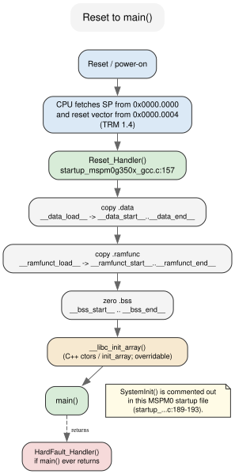
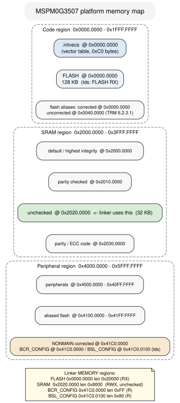

2 — What actually runs¶
Chapter 1 left you with a build command and a flash command, and a blinking
LED at the end of both. That is a working loop. It is also a lie of omission:
the program you flashed is not main(). Between the flash you wrote and the
first line of your C there is a vector table, a startup routine, and a linker
script, and none of them are yours. They are what the toolchain wires around
your code, and if you do not know they exist you will misread every .map,
every memory fault, and every “but I only have five globals” surprised look.
This chapter is a reference, not a build-it. You will open four real files and
one real artifact — the vector table, the startup source, the GNU linker
script, and the .map produced by the example’s build — and read them the way
you would read a schematic. By the end you will be able to take any MSPM0
.elf, find main in it, say exactly which addresses it will touch and in
what order, and explain why the number at address zero is a stack pointer.
The spine is one sentence long:
The chip knows only the reset vector. Everything after that is the linker’s and the startup code’s convention.
There is no DriverLib API to teach here. This chapter touches no dl_*.h
header and calls no DL_* function. That is not a gap — it is the point.
Chapter 3 and Chapter 4 are about the functions that configure peripherals;
this chapter is about the machinery that gets the CPU to them.
The one thing the chip knows¶
Reset is a hardware event. The CPU does not look for a symbol called main,
and it does not read the ELF header’s “entry point”. On the MSPM0 it does
exactly one thing, described in the TRM
(sources/trm/slau846c.txt, Section 1.4, Boot Configuration): it fetches
two words from the bottom of flash — the initial stack pointer at
0x0000.0000 and the reset vector at 0x0000.0004 — and jumps.
Those two words are the first two entries of the vector table. In the SDK’s
startup file
(sources/mspm0-sdk/source/ti/devices/msp/m0p/startup_system_files/gcc/startup_mspm0g350x_gcc.c;
the seed ships a byte-identical copy at
.../examples/nortos/LP_MSPM0G3507/driverlib/empty_non_sysconfig/gcc/startup_mspm0g350x_gcc.c)
it is a plain array:
void (* const interruptVectors[])(void) __attribute__ ((used)) __attribute__ ((section (".intvecs"))) =
{
(pFunc)&__StackTop, /* The initial stack pointer */
Reset_Handler, /* The reset handler */
NMI_Handler, /* The NMI handler */
HardFault_Handler, /* The hard fault handler */
0, /* Reserved */
...
SysTick_Handler, /* SysTick handler */
GROUP0_IRQHandler, /* GROUP0 interrupt handler */
...
};
(startup_mspm0g350x_gcc.c:97-148)
Three details in that opening line matter more than the entries:
section (".intvecs")says “do not put this with the other data; put it in a section I named.” The linker script decides where.intvecslives.usedtells the compiler to keep the array even though nothing in C refers to it by name.The entries are
__attribute__((weak, alias("Default_Handler")))(startup_mspm0g350x_gcc.c:61-91). Each interrupt handler is a weak alias to a do-nothing trap, so you can defineUART0_IRQHandlerin your own file and the linker prefers yours. Chapter 3 reuses this exact word — “the linker prefers yours” — for SysConfig’s generated functions; it is the same mechanism.
The array is 48 words long, 192 bytes (TRM Section 3.3.2, Interrupt and
Exception Table), and the example’s .map confirms the size:
.intvecs 0x00000000 0xc0
*(.intvecs)
.intvecs 0x00000000 0xc0 build/startup_mspm0g350x_gcc.o
0x00000000 interruptVectors
(examples/02-what-runs/build/what-runs.map)
0xc0 is 192. interruptVectors sits at address 0x00000000. That is not a
coincidence of this program; the linker script forces it, and we will see how
in a moment.
The trap: the ELF entry point is not the reset vector¶
Ask readelf where the example starts and it answers 0xc0:
Entry point address: 0xc0
That is the first byte of .text, not the reset handler. It is a leftover
convention from hosted operating systems, and the MSPM0 hardware never looks
at it. The thing the chip actually jumps to is the second word of
.intvecs, which the startup file fills with Reset_Handler:
0000 00802020 f1000000 ed000000 ed000000
(arm-none-eabi-objdump -s -j .intvecs build/what-runs.elf)
Read those little-endian words: 0x20208000 is the stack pointer, and
0x000000f1 is Reset_Handler at 0x000000f0 with the Thumb bit set.
Reset_Handler is nowhere near the ELF entry point, and that is fine.
Reset_Handler does four jobs and then calls main¶
Once the CPU lands on Reset_Handler, the C runtime is not ready. An
initialized global’s value is sitting in flash, not at the SRAM address the
code will read; .bss holds whatever the last power cycle left in SRAM; and
C++ constructors have not run. The startup file handles that. Its whole body is
short enough to read in one sitting (startup_mspm0g350x_gcc.c:157-210):
void Reset_Handler(void)
{
uint32_t *pui32Src, *pui32Dest;
/* Copy the data segment initializers from flash to SRAM. */
pui32Src = &__data_load__;
for(pui32Dest = &__data_start__; pui32Dest < &__data_end__; )
*pui32Dest++ = *pui32Src++;
/* Copy the ramfunct segment initializers from flash to SRAM. */
pui32Src = &__ramfunct_load__;
for(pui32Dest = &__ramfunct_start__; pui32Dest < &__ramfunct_end__; )
*pui32Dest++ = *pui32Src++;
/* Initialize .bss to zero */
for(bs = &__bss_start__; bs < &__bss_end__; ) *bs++ = 0;
/*
* System initialization routine can be called here, but it's not
* required for MSPM0.
*/
// SystemInit();
__libc_init_array();
main();
HardFault_Handler();
}
Those __data_load__ and friends are not C library names and they are not
compiler builtins. They are symbols the linker script manufactures so the
startup code has addresses to loop over. Every one of them is defined in
mspm0g3507.lds — we will meet each below.
Four things to notice, because each is a hole you can fall into:
.datais copied from flash to SRAM. An initialized global has two addresses: a load address in flash (where the bytes are burned) and a run address in SRAM (where the code reads them). The startup loop is the bridge. We will see both addresses in the.map..bssis zeroed, not copied. Zero-initialized globals take no flash space; they only cost SRAM and a memset..ramfuncis copied too. Functions marked into.ramfunclive in SRAM but are loaded from flash. This is how you run code during flash erase, and it is one more copy loop.main()is a normal function call. If it returns, the startup code callsHardFault_Handler().mainis not expected to return, which is why every example you have seen ends inwhile (1).

__libc_init_array, the hook you keep overriding¶
Chapter 4’s manual LED and Chapter 3’s SysConfig LED both define an empty
void __libc_init_array(void) { } in main.c. This is why it exists. The
startup file declares it extern and calls it (startup_mspm0g350x_gcc.c:56,
:199). In a normal hosted toolchain it lives in newlib and walks the
.init_array / .preinit_array lists, running C++ constructors before
main. On a bare-metal program with no constructors, it does nothing useful —
and if you link no newlib, it does not exist at all. Defining your own empty
version satisfies the call and lets the example link against libgcc alone.
The SDK’s own empty_non_sysconfig seed makes the opposite choice: it does
not define the hook, and its makefile links newlib’s version along with -lc -lm --specs=nano.specs --specs=nosys.specs
(.../empty_non_sysconfig/gcc/makefile:41-45). Our example:
examples/02-what-runs/Makefile links -lgcc only and supplies the empty
hook. Both routes reach main the same way; only the ownership of that one
function differs.
One more weak symbol earns its keep in the startup file: _init is declared
__attribute__((weak, alias("initStub"))), and initStub is an empty stub
(startup_mspm0g350x_gcc.c:57-58). Newlib’s __libc_init_array calls _init
and _fini; the alias guarantees the call lands somewhere harmless when
nothing else defines them.
The linker script is the other half of the program¶
Everything the startup code promised — that .data has a load address and a
run address, that .intvecs is at zero, that __StackTop is a real number —
the linker script is what makes true. The example’s script is
examples/02-what-runs/mspm0g3507.lds, copied verbatim from the seed at
.../empty_non_sysconfig/gcc/mspm0g3507.lds (the two files are
byte-identical; diff reports no difference). It begins by declaring the
device’s memory:
MEMORY
{
FLASH (RX) : ORIGIN = 0x00000000, LENGTH = 0x00020000
SRAM (RWX) : ORIGIN = 0x20200000, LENGTH = 0x00008000
BCR_CONFIG (R) : ORIGIN = 0x41C00000, LENGTH = 0x000000FF
BSL_CONFIG (R) : ORIGIN = 0x41C00100, LENGTH = 0x00000080
}
(mspm0g3507.lds:39-46)
That is 128 KB of flash and 32 KB of SRAM, the sizes the datasheet gives for
the MSPM0G3507 (sources/datasheet/mspm0g3507.txt, “128KB flash, 32KB RAM”).
The two *_CONFIG regions are read-only links into the NONMAIN flash area
where the boot configuration and bootloader configuration live; their
addresses sit under the aliased-flash window that TRM Section 1.3.3 places
at 0x4100.0000–0x41FF.FFFF.
SRAM starts at 0x2020.0000 on purpose¶
Notice the SRAM origin: 0x20200000, not the obvious 0x20000000. The TRM’s
SRAM region map (TRM Section 1.3.2, SRAM Region, Table 1-2) aliases the same
physical SRAM into four subregions that differ only in the integrity check
applied on access:
Subregion |
Base |
Check applied |
|---|---|---|
default |
|
highest available (ECC, else parity) |
parity checked |
|
parity |
unchecked |
|
none |
parity/ECC code |
|
the code bytes themselves |
The linker script picks the unchecked window. That choice is deliberate,
and the TRM explains why it is the safe one (and recommends it): on a device
with ECC or parity, spinning up the checked windows means every uninitialized
read — and reset leaves SRAM random — can raise a parity or ECC error and hard-
fault the CPU before your first line of code runs. Linking into
0x2020.0000 sidesteps the whole class of problem. If you ever move the SRAM
origin back to 0x20000000 “to be tidy”, you have turned integrity checking
back on for a region the startup code reads before it writes.
Where each section goes¶
After MEMORY, the script maps C section names onto those regions with
REGION_ALIAS (mspm0g3507.lds:50-61), then defines the output sections. The
ones that matter to the startup flow:
The vector table must be at zero. The script provides an override hook and
defaults it to 0x00000000, then keeps the section there:
PROVIDE (_intvecs_base_address =
DEFINED(_intvecs_base_address) ? _intvecs_base_address : 0x00000000);
.intvecs (_intvecs_base_address) : AT (_intvecs_base_address) {
KEEP (*(.intvecs))
} > REGION_TEXT
(mspm0g3507.lds:67-72)
KEEP is what stops the linker’s --gc-sections from throwing the table away
because no C code references it by name. If KEEP were missing, the reset
vector would be garbage and the chip would fault on the first instruction.
Initialized data has a load address and a run address. This is the .data
section, and AT> is the part that says so:
.data : {
__data_load__ = LOADADDR (.data);
__data_start__ = .;
KEEP (*(.data))
KEEP (*(.data*))
. = ALIGN (8);
__data_end__ = .;
} > REGION_DATA AT> REGION_TEXT
(mspm0g3507.lds:149-156)
Read > REGION_DATA AT> REGION_TEXT as “run in SRAM, load from flash.” AT>
sets the load address; without it, the initializer bytes would vanish. The
three symbols are exactly the ones Reset_Handler loops over.
.ramfunc is the same trick for code (mspm0g3507.lds:97-103): run in
REGION_TEXT_RAM (SRAM), load from REGION_TEXT (flash), with
__ramfunct_load__, __ramfunct_start__, __ramfunct_end__ for the copy
loop. .bss is a plain SRAM section with __bss_start__ / __bss_end__
(mspm0g3507.lds:158-166). .rodata is read-only in flash
(mspm0g3507.lds:105-110).
.noinit is the exception that proves the pattern. It gets its own SRAM
section with no copy and no zero (mspm0g3507.lds:168-172), so the startup code
simply leaves it alone.
The stack is placed by arithmetic, not by bytes. The script reserves a
zero-length .stack section and then defines the top of the stack as the top
of the whole SRAM region:
.stack (NOLOAD) : ALIGN(0x8) {
_stack = .;
KEEP(*(.stack))
} > REGION_STACK AT> REGION_STACK
...
__StackTop = ORIGIN(REGION_STACK) + LENGTH(REGION_STACK);
PROVIDE(__stack = __StackTop);
(mspm0g3507.lds:184-200)
ORIGIN(SRAM) + LENGTH(SRAM) is 0x20200000 + 0x8000 = 0x20208000. That is
the value the vector table’s first word holds. Nothing reserves the stack;
the stack grows down from __StackTop into the space the script left over.
The heap is the mirror image — a growing-up region starting where .bss (and
.noinit) end. The two cursors grow toward each other.
The script’s opening comment says _Min_Heap_Size and _Min_Stack_Size
“generate a link error if heap and stack don’t fit into RAM”
(mspm0g3507.lds:34-36) — but in this script the two symbols are defined and
never used. There is no ASSERT on them anywhere. The promised check is
aspirational here, so the stack/heap boundary is yours to respect: size the
stack for your deepest call chain, and if you use malloc, remember the heap
has no floor at all.

The .map is the receipt¶
Every claim above has a number attached once you link, and the linker will
print it. The GNU toolchain writes it to build/what-runs.map because the
Makefile passes -Wl,-Map=build/what-runs.map (examples/02-what-runs/Makefile,
LDFLAGS). Open it alongside the script; the two read like a question and its
answer.
The link opens with the memory it was given — the four regions straight from
MEMORY:
Memory Configuration
Name Origin Length Attributes
FLASH 0x00000000 0x00020000 xr
SRAM 0x20200000 0x00008000 xrw
BCR_CONFIG 0x41c00000 0x000000ff r
BSL_CONFIG 0x41c00100 0x00000080 r
Then it walks the sections. The interesting lines for our tagged globals:
.ramfunc 0x20200000 0x20 load address 0x00000168
0x00000168 __ramfunct_load__ = LOADADDR (.ramfunc)
0x20200000 __ramfunct_start__ = .
0x20200000 run_from_ram
...
.rodata 0x00000188 0x10
0x00000188 g_banner
...
.data 0x20200020 0x8 load address 0x00000198
0x00000198 __data_load__ = LOADADDR (.data)
0x20200020 __data_start__ = .
0x20200020 g_initialized
...
.bss 0x20200028 0x8
0x20200028 __bss_start__ = .
0x20200028 g_zero
...
.noinit 0x20200030 0x8
0x20200030 g_survivor
...
0x20208000 __StackTop = (ORIGIN (REGION_STACK) + LENGTH (REGION_STACK))
(examples/02-what-runs/build/what-runs.map)
Read the .data line twice. g_initialized has two addresses:
0x20200020, where main will read it, and 0x00000198, where the 0xDEADBEEF
is physically stored in flash. LOADADDR is what makes the second address
available; __data_load__ is that flash address. The same split appears in
.ramfunc: run_from_ram runs at 0x20200000 but its instructions are burned
at 0x00000168. Now the startup loops stop being boilerplate and become
self-evidently necessary: without that .data copy, g_initialized would read
as 0 at runtime.
The whole program, in one table:
Symbol |
Section |
Run address |
Load address |
|---|---|---|---|
|
|
|
same |
|
|
|
same |
|
|
|
same |
|
|
|
same |
|
|
|
|
|
|
|
|
|
|
|
— (no image) |
|
|
|
— (no image) |
|
|
|
— |
(arm-none-eabi-nm build/what-runs.elf, cross-checked against the .map)
.bss and .noinit have no load address because they contribute nothing to
the flash image. You can watch that directly in the .bin: it is 416 bytes
(ls -l build/what-runs.bin), and g_zero and g_survivor are not in it. The
ELF’s .bss and .noinit section headers say NOBITS, the linker’s word for
“addresses only, no file bytes”
(arm-none-eabi-readelf -S build/what-runs.elf).
One line in the map has no obvious author and deserves a name. We compiled
main.c into one object and the startup file into another, and main calls
run_from_ram, which the linker has placed in SRAM — over 500 MB away,
beyond the roughly ±16 MB reach of a single ARMv6-M branch. So the linker
synthesizes a trampoline:
.text.initStub.__stub
0x00000158 0x10 linker stubs
...
0x00000158 __run_from_ram_veneer
(examples/02-what-runs/build/what-runs.map, arm-none-eabi-nm)
You did not write __run_from_ram_veneer. The linker added it, and it appears
in the map under “linker stubs”. Any time you move a function to .ramfunc or
call across regions, expect to see these show up — and expect them to be
counted against flash.
What the seed ships versus what this example builds¶
The chapter’s seed is the SDK’s empty_non_sysconfig. Our example is that
seed plus five tagged globals; the startup file and linker script are
byte-identical, and the build wiring is the same shape. The one honest
difference is the C library:
SDK seed |
|
|
|---|---|---|
Link |
|
same |
Map |
|
|
C library |
|
|
|
newlib’s |
overridden empty in |
|
yes |
yes |
The seed’s other toolchain folders hold linker files we do not use, because
the guide is pinned to GNU Arm: .../empty_non_sysconfig/iar/mspm0g3507.icf,
.../keil/mspm0g3507.sct, and .../ticlang/mspm0g3507.cmd encode the same
regions with different syntax. Do not mix their semantics into a GNU Arm
build.
Caveat: --gc-sections eats what nobody references¶
Both Makefiles link with -Wl,--gc-sections, so the linker discards any
section no kept section points to. The vector table survives only because the
script wraps it in KEEP. Your own globals are not so lucky: while building
this chapter, the first version of run_from_ram read g_banner[0], the
compiler folded it to a constant, and the map’s very first entry became
Discarded input sections
.rodata.g_banner
0x00000000 0xd build/main.o
(observed while developing this example; the shipped build’s .rodata output
section is 0x10 bytes at 0x00000188). Indexing through the
volatile g_survivor kept the read opaque, and the string reappeared. If a
constant you know you declared is missing from the map, look for it under
“Discarded input sections” before you look for a bug in your code.
Common mistakes¶
Reading the ELF entry point as the reset vector. readelf -h says 0xc0;
the chip jumps to word[1] of .intvecs. They are different numbers and only
the second one boots.
Assuming main is the first code that runs. It runs after .data is
copied, .ramfunc is copied, .bss is zeroed, and __libc_init_array returns.
If a global is wrong at the top of main, the bug is upstream, in the startup
or the linker script.
Linking into 0x2000.0000 “because SRAM starts there”. 0x2000.0000 is the
ECC/parity-checked alias; the unchecked alias is 0x2020.0000, and the SDK’s
script deliberately uses it. Reading uninitialized checked SRAM can hard-fault
before your code runs (TRM 1.3.2).
Expecting .bss to cost flash. It does not; it is NOBITS and absent from
the .bin. If you need a large zeroed buffer, .bss is free in flash terms.
Putting data you want retained across reset in .noinit and then assuming it
is initialized. Reset_Handler deliberately does not touch .noinit; that is
its whole purpose.
Forgetting KEEP when you add your own vector-like table. A section that
nothing references disappears under --gc-sections. The SDK’s .intvecs is
safe because the script keeps it; a table you invent is not.
Exercises¶
Run
arm-none-eabi-objdump -s -j .intvecs build/what-runs.elfand decode the first two words: what stack pointer and what reset address do they hold? Then find theGROUP0_IRQHandlerentry. What address does it hold, and why is it the same asDefault_Handler?In
main.c, changeg_initializedto0x0000BEEFu. Rebuild and re-read the.map. Which address changed — the load address, the run address, or both?Delete the
__attribute__((section(".ramfunc")))fromrun_from_ram, rebuild, and find whererun_from_ramand__run_from_ram_veneerland now. Explain the disappearance (or not) of the veneer.Move the
SRAMorigin inmspm0g3507.ldsfrom0x20200000to0x20000000, rebuild, and inspect theMemory regionline the linker prints. What changed about the region, and what would happen on a device whose SRAM supports ECC whenReset_Handlerreads an uninitialized word?Define your own
Reset_Handlerinmain.c. Does it link, and which definition wins? (The startup file’s declaration is__attribute__((weak)), the same rule as the interrupt aliases.)Change the
SRAMLENGTHinMEMORYfrom0x8000to0x20and rebuild. What does the linker do? Then change_Min_Stack_Sizeand rebuild. Which of the two actually stops the build, and what does that tell you about the “generate a link error” comment (mspm0g3507.lds:34)?
Build the example¶
make -C examples/02-what-runs
It produces build/what-runs.elf, build/what-runs.bin, and the chapter’s
central artifact, build/what-runs.map.
make -C examples/02-what-runs clean removes them. See
examples/02-what-runs/README.md for the read-the-map checklist and the
optional debugger step.
Further reading¶
sources/mspm0-sdk/source/ti/devices/msp/m0p/startup_system_files/gcc/startup_mspm0g350x_gcc.c— the vector table,Reset_Handler,Default_Handler, and the__libc_init_arrayhook (byte-identical to the seed’s copy atexamples/nortos/LP_MSPM0G3507/driverlib/empty_non_sysconfig/gcc/startup_mspm0g350x_gcc.c)sources/mspm0-sdk/examples/nortos/LP_MSPM0G3507/driverlib/empty_non_sysconfig/gcc/mspm0g3507.lds— theMEMORYregions,REGION_ALIAS, and every output section the startup code depends onsources/mspm0-sdk/examples/nortos/LP_MSPM0G3507/driverlib/empty_non_sysconfig/gcc/makefile— the seed’s link flags, including newlib and--gc-sectionssources/mspm0-sdk/examples/nortos/LP_MSPM0G3507/driverlib/empty_non_sysconfig/empty_non_sysconfig.c,.../ti_msp_dl_config.c,.../ti_msp_dl_config.h— the seed this chapter modifiesexamples/02-what-runs/build/what-runs.map— the generated map quoted throughoutsources/trm/slau846c.txt— Section 1.3 (Platform Memory Map: 1.3.1 Code, 1.3.2 SRAM Region and Table 1-2 aliases, 1.3.3 Peripheral Region), Section 1.4 (Boot Configuration and the reset-vector fetch), Section 3.3.2 (Interrupt and Exception Table, 48 words), Section 6.2.3.1 (Flash Memory Map)sources/datasheet/mspm0g3507.txt— MSPM0G3507 128 KB flash / 32 KB SRAM